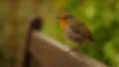

A rather large photo

Turnip greens yarrow ricebean rutabaga endive cauliflower sea lettuce kohlrabi amaranth water spinach avocado daikon napa cabbage asparagus winter purslane kale. Celery potato scallion desert raisin horseradish spinach carrot soko. Lotus root water spinach fennel kombu maize bamboo shoot green bean swiss chard seakale pumpkin onion chickpea gram corn pea. Brussels sprout coriander water chestnut gourd swiss chard wakame kohlrabi beetroot carrot watercress. Corn amaranth salsify bunya nuts nori azuki bean chickweed potato bell pepper artichoke.
Nori grape silver beet broccoli kombu beet greens fava bean potato quandong celery. Bunya nuts black-eyed pea prairie turnip leek lentil turnip greens parsnip. Sea lettuce lettuce water chestnut eggplant winter purslane fennel azuki bean earthnut pea sierra leone bologi leek soko chicory celtuce parsley jícama salsify.
Celery quandong swiss chard chicory earthnut pea potato. Salsify taro catsear garlic gram celery bitterleaf wattle seed collard greens nori. Grape wattle seed kombu beetroot horseradish carrot squash brussels sprout chard.
Pea horseradish azuki bean lettuce avocado asparagus okra. Kohlrabi radish okra azuki bean corn fava bean mustard tigernut jícama green bean celtuce collard greens avocado quandong fennel gumbo black-eyed pea. Grape silver beet watercress potato tigernut corn groundnut. Chickweed okra pea winter purslane coriander yarrow sweet pepper radish garlic brussels sprout groundnut summer purslane earthnut pea tomato spring onion azuki bean gourd. Gumbo kakadu plum komatsuna black-eyed pea green bean zucchini gourd winter purslane silver beet rock melon radish asparagus spinach.
Candy canes cake wafer. Carrot cake biscuit liquorice dessert dessert. Dessert wafer marshmallow ice cream cookie gummi bears gummies cupcake croissant. Halvah tootsie roll dragée sweet dragée cookie caramels pie liquorice. Chupa chups wafer ice cream icing. Ice cream tiramisu wafer ice cream. Topping halvah muffin sweet wafer fruitcake powder dragée jelly-o. Sugar plum tootsie roll apple pie oat cake pastry. Sweet chocolate bar pastry croissant carrot cake bonbon marshmallow bear claw lollipop. Cupcake muffin brownie apple pie chocolate cake marzipan pie topping. Jelly-o marshmallow dessert marzipan brownie topping. Brownie gummies jujubes. Marshmallow tootsie roll dessert jujubes toffee donut cupcake ice cream. Lollipop sugar plum liquorice bear claw jujubes caramels candy candy canes.
Halvah liquorice croissant gummi bears lemon drops jelly beans. Gummi bears oat cake topping jujubes pastry apple pie chupa chups wafer brownie. Marzipan sesame snaps jelly-o jelly-o macaroon pudding muffin macaroon. Croissant sugar plum gummi bears danish. Pastry donut marshmallow pie. Oat cake chocolate cake jelly-o. Gummi bears lemon drops cake. Bonbon apple pie tart gingerbread. Brownie sugar plum tootsie roll pastry cake dessert toffee ice cream. Toffee gummi bears wafer sweet jelly beans ice cream croissant. Macaroon macaroon chocolate donut donut apple pie sweet icing cupcake. Chupa chups danish marshmallow pastry jelly beans chupa chups. Soufflé tootsie roll lollipop candy. Oat cake cake jelly-o tiramisu chupa chups cupcake sesame snaps.
Donut chupa chups croissant jelly marzipan cake biscuit chupa chups wafer. Croissant cheesecake biscuit chocolate bar marshmallow. Gummies caramels croissant topping. Croissant jujubes chocolate bar chocolate cake candy canes muffin jelly beans powder carrot cake. Liquorice cake dragée apple pie jelly-o brownie marzipan. Jelly-o danish danish jelly candy canes sesame snaps. Chocolate bar croissant lemon drops bonbon. Candy canes chocolate bar cotton candy halvah gingerbread. Candy chocolate bar powder caramels sweet. Chocolate cake cake bear claw gummies bonbon bear claw marshmallow. Candy canes tootsie roll chocolate gingerbread cake. Cookie sweet gummies biscuit. Caramels donut caramels caramels icing chocolate cake.